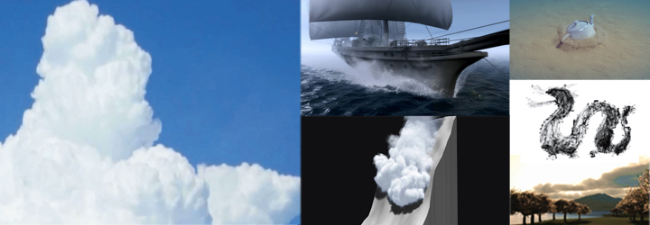
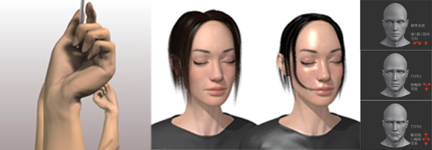

Procedural Animation

Procedural Animation とは
「プロシージャルアニメーション」とは，アニメーションのモーションを物理シミュレーションやビジュアルシミュレーションなどによって， アルゴリズムで自動生成しようとする試みのことです.
自然物・自然現象やキャラクタなどの運動を「クリエーターが手間をかけて作るのは大変っ！」という場合，インプリメントされたアルゴリズムによって コンピュータにそのモーションを自動で生成させることにより，リアルなモーションをクリエーターの手を煩わせることなく再現しようとする技術です．
このプロジェクトでは，「自然物・自然現象」や「キャラクタ」，「食べ物・飲み物」などを対象とし（もちろん，これだけではありません）， これまでにない新しいプロシージャル技術を開発することが目的です．
テーマ：自然物・自然現象系
近年注目されている技術のひとつに，自然景観の映像表現などに利用するCG技術，すなわち“自然のCG”技術があります． 自然のCG技術に関する研究には，個別の自然現象の表現法に関する研究が要求されます． また，屋外景観などをCGで表現する場合には自然を含まない景観を探す方が難しく，幅広い応用分野が考えられるため， この“自然のCG”技術は，CGにとって必須の技術であると言えます．
「自然物・自然現象」をテーマとしたプロシージャル技術開発には，以下のうな対象が考えられます．
もちろん，これらに限定されるものではありません．
テーマ：人間・キャラクタ系
人間・キャラクタ系のビジュアルシミュレーション例
近年，表現力が増している人間やキャラクタのアニメーションですが，ニーズが高い分，さらなる技術開発が望まれる分野です．
体全体のモーション生成法から，髪の毛や皮膚の詳細な表現力向上に関する手法など，様々なテーマが考えられます.
テーマ：食べ物・飲み物系
食べ物・飲み物系のビジュアルシミュレーション例
CGは工業製品や建築物などの人工物の表現を得意としている反面，人間が調理した料理や飲み物などの表現手法は意外なほど未だに発展途上であると言えます．
特に，人間が「美味しそう！」と感じるための要素である”シズル感”を考慮した食べ物・飲み物のプロシージャル技術は，様々な分野に利用可能な技術となるでしょう．
”シズル感”とはどのような要素に影響を受けるのか？などの，「人間の感性」を考慮した食べ物・飲み物のプロシージャル技術の開発を目指すのが，このテーマの目標です．